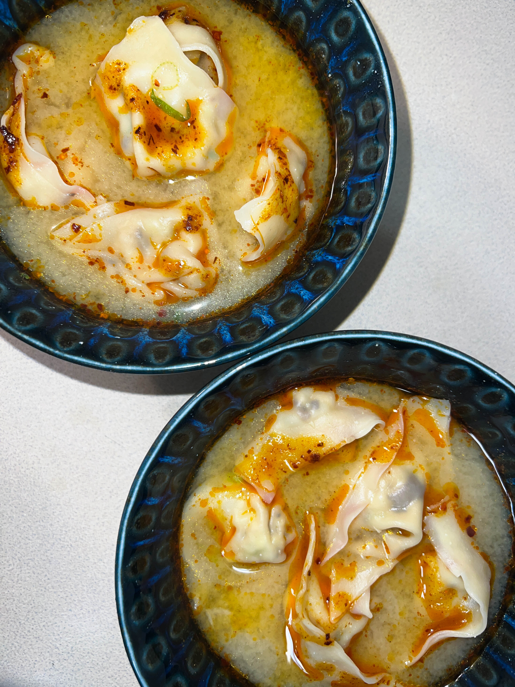

Guided Recipes / Vegetarian Miso Wonton Soup
Vegetarian Miso Wonton Soup

Ingredients
Equipment
Interactive Video
Written Directions
Prep
- Gather all of your equipment and ingredients.
- Remove stems from shiitake mushrooms and save them to be used in stock, or add them to stock.
- Finely chop 10 shiitake mushrooms and add to the mixing bowl.
- Finely chop 1 cup cabbage and add to the mixing bowl.
- Thinly slice 3 scallions and add to the mixing bowl.
- Mince 3 cloves of garlic and 1 inch of ginger with a microplane and add to the mixing bowl.
- Add 2 eggs, 2 tbsp soy sauce, 1 tbsp sesame oil, and 1/2 tbsp corn starch to the mixing bowl.
- Stir until combined.
- Optional Cook a tablespoon of the mixture on a nonstick pan and taste then adjust seasoning with salt and pepper.
- Open your pack of dumpling wraps and cover them with a wet paper towel.
- Use your finger to wet the edge of the dumpling wrapper.
- Add a teaspoon of the mixture to the center of the wrapper.
- Fold the wrap in half then pinch the corners together.
- Do this until you have used all of the filling.
Cook
- Bring 6 cups of water to a boil.
- Add in wontons and allow to cook for 4-6 minutes.
- Serve in miso wonton soup, or with dumpling sauce.
- Freeze any leftover uncooked dumplings.